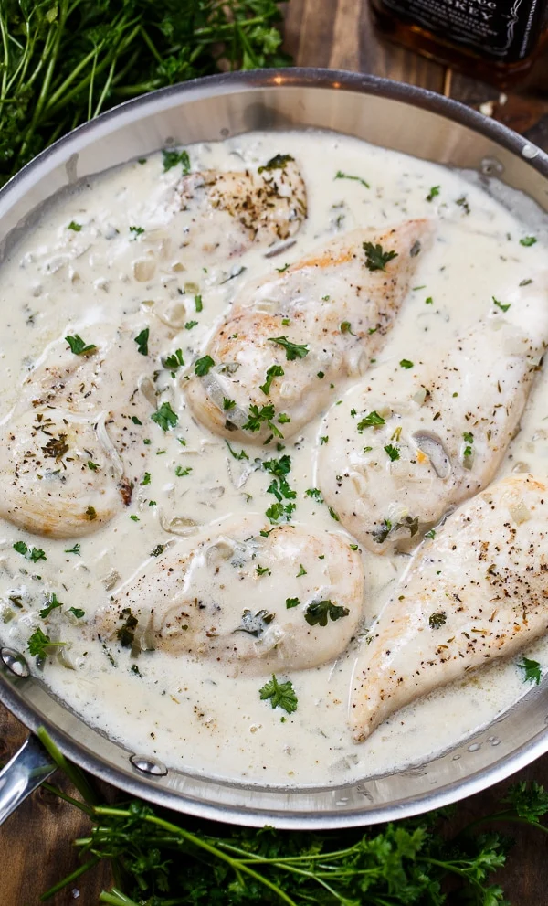

Jack Daniels chicken
This recipe is not the easiest but it super delisious! You have to try it when you get a chance.
Ingredients
- 6 boneless skinless chicken breasts
- salt and pepper
- 2 tablespoons butter
- 2 tablespoons vegetable oil
- 1/2 cup Jack Daniel's Whiskey
- 3 large shallots chopped (or 1 onion)
- 1/4 teaspoon dried thyme
- 1/4 cup minced fresh parsley
- 1/4 cup water
- 1 cup heavy cream
- 2 teaspoons cornstarch
- 1 tablespoon water
Steps
- Season both sides of chicken with salt and pepper.
- butter and oil in a large pan. Add chicken and brown on both sides.m
- Add the Jack Daniels and carefully ignite. Shake the pan until the flames go out.
and shallots and cook for 1 minute.
- Add thyme, parsley, and 1/4 cup water. Cover pan and cook over low heat for 25 minutes. Transfer chicken to a plate and add the cream to the pan.
- Mix the cornstarch and 1 tablespoon water together in a small bowl. Add to sauce. Simmer sauce until thickened. Season to taste with salt and pepper.
- Return chicken to pan and remove from heat.
Return to top
Return to main page